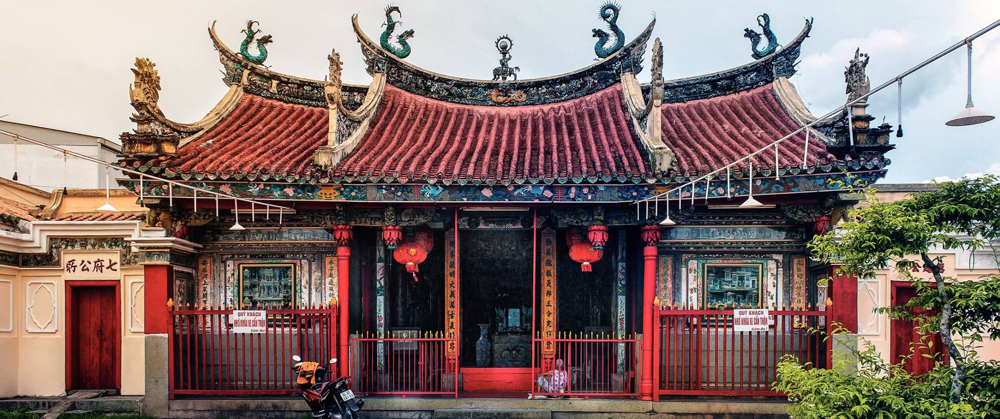

Địa Điểm Nên Đến


Chùa Ông
Ngôi chùa cổ kính, không khí trang nghiêm
Tháp Chàm Po Sah Inu
Kiến trúc Chăm cổ, lịch sử lâu đời
Ẩm Thực Tết Bình Thuận
Khám phá những món ăn đặc sản Bình Thuận trong dịp Tết Nguyên Đán. Từ hải sản tươi ngon đến bánh chưng truyền thống, hãy cùng trải nghiệm hương vị đặc trưng của vùng đất này.
Xem Thêm